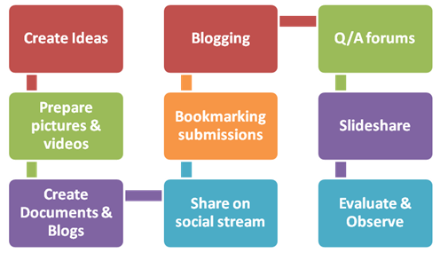

SEO
SEO in Chennai, India and in other major cities across globe has gained a lot of traction in the recent times. SEO is a strategy to optimize your website to get more visitors from search engines (Google, Bing, Yahoo, etc). The top results in the search engines get significantly more attention and click-through from users and the natural search results are trusted more than the paid ones. Small businesses to big Fortune 500 companies rely on SEO to market their brands, products, and campaigns. Every business owner must understand that SEO is crucial for your business to sustain and increase sales. We understand that SEO is evolving, complex and tons of effort needs to be put in to get the best results.
How SEO can improve your business :
Our high level SEO Process:
- Keyword Analysis –
We identify the keywords that your potential customers use to search in major search engines. At Imax softwares, we call them “Money Keywords”, because once we identify these keywords effectively, it will significantly increase your leads and sales - Website Audit –
A detailed audit of your website in terms of Design, User Interaction, Quality of content and the adherence of best practices recommended by major search engines is performed. In case if you don’t have a website yet, we create a website for you at an affordable cost, incorporating all the best practices - Off-page quality check –
We perform a detailed analysis of the quality of your backlinks. If there are no quality backlinks which is the case for most of the websites, there is a heck of work for us to do! -
Competitor Analysis –
We identify your major competitors and come up with a strategy to beat the competition. We use some of the most expensive and industry leading softwares to perform this analysis. Doing this analysis helps us to understand where you stand against your competitors and come up with a better SEO strategy.
On-Page Optimization –
There are about 50 on-page optimization techniques and some of Imax softwares’s in-house SEO secrets that we use to optimize your website. Few of the on-page optimization techniques include XML Sitemap creation, Robots.txt, Page title, Meta description, URL rewrite.
Content Development –
You might have heard people in SEO industry saying “Content is King”. At Imax softwares, we measure the quality of your content in terms of uniqueness, relevancy and various other factors and write/rewrite your content to be more interesting and to align with Google’s guidelines
Search Engine Submission –
We submit your website to leading search engines for better visibility
Off-page Optimization –
We implement an effective link building strategy that will get your website quality backlinks. Based on the package your choose the number of backlinks to your website varies
Tracking –
We implement some of the tracking tools like Google Analytics and Google Webmasters to track the progress of SEO
- We guarantee you to attain your needs through quality WOPS service where you can get a visually favorable attention for your website in search engines, by using dynamic unique search optimization tools,Social Network applications and others.
- We make your website pulling, enough to get a great number of prospective ( Potential inquiries ) on the way through advertisement of your Business services in Our registered web portals which more than 100.
- We explore every potential way to make your business grow better than your Competitor through analyzing your website fully and choosing the correct methods in WOPS (SEO or SMO) Strategy for your site.
- Our skilled workforce constantly pillar our success. We have encircled with well-trained and strongly skilled professional team for SEO Service, who are always ready to handle all your SEO specifications efficiently.
Our Facilities for Your Business evolution:
- Setting appropriate Title and Description
- Keyword Optimization.
- On- Page Optimization
- Off- page Optimization
- White Hat SEO
- Black Hat SEO
- Gray Hat SEO
- Silver Hat SEO
- Internet Marketing and Advertising
- SMO activities.
Our Activities:
We are committed to offer the professional WOPS services at a very reasonable cost, and our WOPS Professional have been expertised in search engine optimization and Social Media Optimization, so you will get the best ranking result by us.
If you want the on line promotion for your business/services website then contact us or drop a mail to us any time. We are ready to provide you the best optimized web solution.
Search Mobile Optimization
Social Media Optimization (SMO) is a wonderful way of generating website popularity and connecting people together with different point of views and interests through various social media websites like online communities, blogs and forums. Internet users here meet together to discuss a certain topic, share ideas on various issues or simply express whatever they feel like.
Social Media Optimization includes adding RSS feed, blogging and forums, where people are free to express their views and can comment on each other posts. Social networking websites have proven to be very popular in the past few years and the opportunity to use them for search engines, business promotion, online marketing and website promotion is very interesting.
You can always target more traffic through SMO by using various social networking websites like Digg, Furl, Stumble Upon and many more. Active participation in various community forums and healthy discussions with meaningful inputs can automatically increase the value and help in attracting the people to your website.
A great feature of micro blogging through twitter can be a great advantageous tool for the promotion of a website which is categorized under Social Media Marketing.
- Tagging and social book marking
- Provide ability for easy and quick linking
- Should be socially networked
- Allow the posting of the views and comments on the wall
- Create blogs for your websites
- Building community through forums
- Creating viral media like podcasts, videos and audio streams.
Some of the Search media optimization rules include:-

Our professionals at Imax soft wares provide you with Social Media Optimization Services which work as effectively as viral marketing. Social media optimization has proved to be another better way to woo clients to your website and getting the site optimized better than Search Engine Optimization (SEO). It helps you to focus on driving traffic from various sources other than search engines, thus providing an improved search engine ranking.
Another important feature of SMO is that this service is cheaper than the other SEO services. You can also lead to generation of one way links from high ranking sites. Therefore, it's great for your page optimization and would enable people to find these links while browsing these social websites. The more explanatory and informative is your review, the more possibility of people browsing through your link.
FACEBOOK PROMOTION
Facebook Ads marketing helps attract more customers by displaying your advertisements on Facebook. This opens your business to millions of active online users thus providing you a competitive edge. We believe in delivering high Returns on Investment (ROI) through constant monitoring, testing and better targeting of keywords. No matter what your budget is and whether you have short term or long term goals, we can manage your campaign so that you get the maximum returns on investment.
Keyword Research
Ad Copy Development
Bid Management
Regular Tracking and Analysis
Why should you choose us to manage your Facebook Ads marketing campaign?
Its simple, because:We help you make your business more social
We help your business tap into the wide-world of Facebook be it for brand building or business related activities. There are more than 700 million users on Facebook and the number is increasingly growing. We help you reach this audience effectively by using innovative marketing campaigns.
We help you improve your ROI, effectively
Facebook Ads marketing campaigns can turn out to be a failure if you don't know what you are doing. We use our expertise to manage your campaign effectively so that you get maximum possible returns on your ad spend. So whether you are a Start-up, SME or a large enterprise, our team will have your campaign up and running in no time base on your requirements.
We manage your Facebook Ads Campaign professionally
We manage your campaign to generate relevant traffic to your website for targeted keywords. We analyze your website for distribution and placement which includes a list of costs for top placement on Facebook Ads and fine-tune your Facebook Ads campaign accordingly. All this helps you focus more on your business and increase profitability.
We help you target the right audience in the right context
We your campaign reach to your targeted audience based on your selected keywords. We monitor your campaign's performance and suggest corrective action if required, to achieve desired results.
Rank Getter Facebook Ads marketing services are designed to create an effective campaign and bring your website a high Click Through Rate (CTR). We will plan and execute a highly customized marketing strategy which is certain to increase the targeted traffic to your website.
Google Adwords Marketing
Rank Getter is a premier Pay Per Click (PPC) marketing company known for its dedicated professionals and extensive industry experience. We believe in delivering high Returns on Investment (ROI) through constant monitoring, testing and better targeting of keywords. No matter what your budget is and whether you have short term or long term goals, we can manage your campaign so that you get the maximum returns on investment.
We follow a structured process to manage your Google Adwords marketing campaigns efficiently which includes:
Keyword Research
We do detailed keyword research and website analysis to prepare a list of core keywords that best describe your business, products or services and are in tune with your campaign goals.
Ad Copy Development
Its important for your Google Adwords marketing campaign to have a well defined and self descriptive Ad copy to engage users with your brand. We help you create an effective Ad copy that attracts your target group and helps in conversions.
Bid Management
We use our expertize to bid on keywords that deliver excellent return on investment (ROI) and conversion metrics. The bids are monitored and effectiveness of each targeted keyword is reviewed regularly. This is done to ensure your goals are in-line with your Ad spend.
Regular Tracking and Analysis
We provide weekly and monthly reports with detailed information on click through rates (CTRs), conversion rates and keyword quality scores during the campaign. This helps you understand the performance of you campaign on weekly or monthly basis.
Why should you choose us to manage your Google Adwords marketing campaign?
Its simple, because:
We help you improve your ROI, effectively
Google Adwords marketing campaigns can turn out to be a failure if you don't know what you are doing. We use our expertise to manage your campaign effectively so that you get maximum possible returns on your ad spend. So whether you are a Start-up, SME or a large enterprise, our team will have your campaign up and running in no time base on your requirements.
We manage your Google Adwords Campaign professionally
We manage your campaign to generate relevant traffic to your website for targeted keywords. We analyze your website for distribution and placement which includes a list of costs for top placement on Google Adwords and fine-tune your Google Adwords campaign accordingly. All this helps you focus more on your business and increase profitability.
We help you target the right audience in the right context
We your campaign reach to your targeted audience based on your selected keywords. We monitor your campaign's performance and suggest corrective action if required, to achieve desired results.
Contact Rank Getter today for your Google Adwords Marketing needs and see the difference for yourself.
Rank Getter Google Adwords marketing services are designed to create an effective campaign and bring your website a high Click Through Rate (CTR). We will plan and execute a highly customized marketing strategy which is certain to increase the targeted traffic to your website.
Digital Consulting
In the fast changing online world your website and online marketing strategy requires constant modifications to maintain a leading edge. Be it adapting to the new search engine algorithms, running effective online advertisement campaigns, targeting right social media channels or keeping up with the latest web designs technologies it requires constant tweaking to remain competitive in online media.
This is why you need expert and dedicated digital consultants to continually work on your web and social properties to keep you ahead of the competition.
At RankGetter we believe that having deep understanding of clients business requirements helps us suggest or tweak online services which can match their overall goals.
This approach differentiate us from other "IT" companies which are only focused on technology. What ever goal you want to achieve from your online campaigns rest assure that we will work with you and help you reach there.
Know how can you excel above your competitors in online arena by contacting us today!
Whether you need assistance in starting your online activity like creating a awesome website using latest technologies like CSS3 and HTML5 or making your brand social, we can support you at any stage.
We can even help you identify key pain areas in your online campaigns and plans. We provide you with expert opinion and empower you with right insights to achieve your online business goals cost-effectively and in timely fashion.
Web Advertisment
Get Your Advertisements reach within Minutes in Google, Yahoo, Bing, Facebook without the need of Search Engine Optimization and Search Engine Marketing!!
It is faster to reach the right people in right place as much as soon when compared to other traditional media advertisements.
Select your target cities, regions, Age group, Gender and Occupation within your web Advert account.